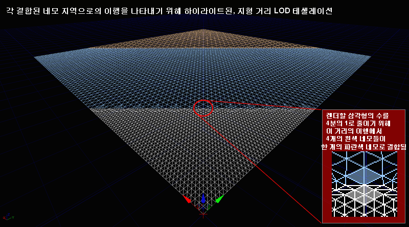
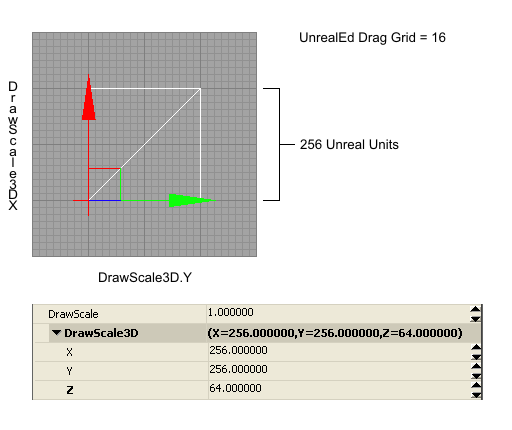

?�레???�자??관??지침과 ?�보
문서 변경내?? David Green ?��?.
개요
Unreal Engine 3????��?� ?�양?�의 ?�각???��??�과 ?�용법을 ?�공?�는 ?�연???�레???�스?�을 지?�합?�다. ?�각?�으�??�덕, 계곡, ?? �? ?�로 ?�을 그릴 ?�있???�이?�맵 기반 ?�스?�과 ?? 바위, 모래, 진흙 ???�실 ?�계???�스�??�일??지?�하??멀???�이???�레???�질 ?�스?�을 ?�용?�여 각기 ?�른 ?�경???�현?????�고 ?�양???�마�??�을 ???�습?�다. ?�, ?�초, ?�굴, �? ?��????��? ?�과 ?�편 ?�의 foliage�??�더링하??멀???�이??Decoration ?�스?��? ?�연?�과 ?�실감을 ?�공?�니??
 ?�레??만들�?/strong>
?�레?��? ?�반?�으�??�음 2가지 �?1개의 기술???�용?�여 만들?�집?�다. ?�덕�?골짜기�? 만들�??�해 ?�레??메쉬??직접 ?�으�??�인?�을?�는 방법?�고, ?�른 ?�나???��??�서 만들?�진 ?�레???�이?�맵 ??가?�오기하??방법?�니?? ?�한 ?�이?�맵 ?�보??DEMs (?��????�고 모델: Digital Elevation Model) ?�보?�서 ?�을 ???�습?�다. ?? ?�, 바위�??��??�는 ?�질 ?�이?�는 ?�스처�? ?�레?�의 ?�디??블렌?�되???�는지�?결정?�는 ?�레???�파�?/a> ?�구�??�용?�여 만들 ???�습?�다.
?�레???�용 �?�??�이?�웃
?�레?�는 ?�시 구획, ?�러?�인 ?�원 같�? ?��? ?�역?�서 ?�동?�니 ?��????�르기까지�??��??�이?�하?????�용?�니?? ?�는 ?�체 게임 맵�? ?�과 계곡 같�? 지?�적???�양??기능???�합???��? ?�외 ?�레???�자?�에 기반?????�습?�다.
?�레?��? ?�정?�으�??�계????바위, 뷰트(buttes), ?�벽, �??�원??지?�적??메쉬?� ?�께 ?��??�어 ?�용?�는 경우가 많습?�다. 추�? 메쉬???�레?�에 ?�오???�양??foliage?�도 ?�용?�니?? ?�레?��? ?�용??게임??�??�자?�과 ?�이?�웃?� ?��??�레??기능???�해 ?�레?�어???�직임???�한?�고, 게임 맵의 "?�계"?�서 ?�나거나 ?�는 ?�어지지 ?�도�? ?�과?????�는 ???�는 ?�벽??경기??지??�� 주위??만듭?�다.
?�레???�스?��? ?�칙?�으�??�점 Z 값이 �?교차?�에???�각?�의 고도�?결정?�는 그리???�각??메쉬 X*Y 배열???�더링합?�다. ?�벨 ?�자?�너가 직면?�는 ?�전 �?1가지??최고??비주???�질�??�능 ?�정???�공?�기 ?�해 ???�레??메쉬???�절???�이?�웃 �??�상?��? ?�택?�는 것입?�다.
?�레??만들�?/strong>
?�레?��? ?�반?�으�??�음 2가지 �?1개의 기술???�용?�여 만들?�집?�다. ?�덕�?골짜기�? 만들�??�해 ?�레??메쉬??직접 ?�으�??�인?�을?�는 방법?�고, ?�른 ?�나???��??�서 만들?�진 ?�레???�이?�맵 ??가?�오기하??방법?�니?? ?�한 ?�이?�맵 ?�보??DEMs (?��????�고 모델: Digital Elevation Model) ?�보?�서 ?�을 ???�습?�다. ?? ?�, 바위�??��??�는 ?�질 ?�이?�는 ?�스처�? ?�레?�의 ?�디??블렌?�되???�는지�?결정?�는 ?�레???�파�?/a> ?�구�??�용?�여 만들 ???�습?�다.
?�레???�용 �?�??�이?�웃
?�레?�는 ?�시 구획, ?�러?�인 ?�원 같�? ?��? ?�역?�서 ?�동?�니 ?��????�르기까지�??��??�이?�하?????�용?�니?? ?�는 ?�체 게임 맵�? ?�과 계곡 같�? 지?�적???�양??기능???�합???��? ?�외 ?�레???�자?�에 기반?????�습?�다.
?�레?��? ?�정?�으�??�계????바위, 뷰트(buttes), ?�벽, �??�원??지?�적??메쉬?� ?�께 ?��??�어 ?�용?�는 경우가 많습?�다. 추�? 메쉬???�레?�에 ?�오???�양??foliage?�도 ?�용?�니?? ?�레?��? ?�용??게임??�??�자?�과 ?�이?�웃?� ?��??�레??기능???�해 ?�레?�어???�직임???�한?�고, 게임 맵의 "?�계"?�서 ?�나거나 ?�는 ?�어지지 ?�도�? ?�과?????�는 ???�는 ?�벽??경기??지??�� 주위??만듭?�다.
?�레???�스?��? ?�칙?�으�??�점 Z 값이 �?교차?�에???�각?�의 고도�?결정?�는 그리???�각??메쉬 X*Y 배열???�더링합?�다. ?�벨 ?�자?�너가 직면?�는 ?�전 �?1가지??최고??비주???�질�??�능 ?�정???�공?�기 ?�해 ???�레??메쉬???�절???�이?�웃 �??�상?��? ?�택?�는 것입?�다.
 ?�레???�기
Unreal Engine 3??최�? 512k x 512k(524288 x 524288) Unreal ?�위 ???�드 ?�기�?지?�합?�다. ?�것?� 1 UU = 2 cm??기본 ?�진 ?�위 변?�을 ?�용?�면 ??10 ?�방 ?�로미터??지??�� ?�일??것입?�다. ?�제 게임 ?�레??지??? 보통 ?�것보다 ?�씬 ?��? ?�외 ?�레??기반 맵의 경우 보통 1 ??미만?�다. ?�늘??천체?� 같�? 최�? ?�계 ?�기???��???배치???�상?� ?�더링되지�? "?�드" ?�상?� �??�용 가?�한 지??���??�한?�니??
Terrain.NumPatches???�해 ?�정?�는 ?�레??heightmap XY ?�상???? 128x128 ?�는 256x256) �??�레???�치???�기�?지?�하??Display.DrawScale?� 결국 최종 ?�레??메쉬??�??�역??결정?�니?? ?�레???�테?�과 ?�더�??�능 ?�이??최고??균형???�해?�는 가???�과?�인 ?�치 ?�기 값과 ?�치 ?�의 집합???�택?�야 ?�니??
?�능�??�일 ?�기????가지 ?�유�??�하??1024x1024 ?�치 ?�상???�레?�을 ?�작?�는 것�? 권장?��? ?�습?�다. ?��? ?�면, 800 만개???�각?�인 2048x2048???�레?��? ?�집기에???�업 ?�간??길어지�?결과?�으�??�청??�??�일 ?�기�?초래?�니?? ?�부분의 경우, 512x512??초과?�는 ?�레?�에???�떤 기술?�인 문제가 ?�길 ???�기 ?�문?? �??�자?��? ?�???�레?�이 ?�바�??�택?��? ?��?�?검?�하�?가?�하�??�평가?�야 ?�니??
?�이?�맵 비트 ?�도
Unreal Engine ?�레???�스??가?�오�??�해 ?��? ?�이?�맵 ?�일???�용?�여 맵을 만들 ?? ??�� ?�합??16 비트 ?�이?�맵 ?�식�??�일 ?�업???�십?�오. ?��? ?�인???�프?�웨?�의 지?�이 간단?�기 ?�문??8 비트 ?�색�??�이?�맵 ?�일???�택?�면, ?�용 가?�한 고도 범위??1/256만을 ?�용?�는 ?�레?�을 초래?�게 ?�니?? ?�것?� ?�반?�으�?바람직하지 ?��? 계단 구조???�라??모습???�레?�에 가?�오�??�니??
?��? ?�이?�맵 ?�일�??�업?�는 경우, 8 비트 ?�색조만???�집?�고 ?�재??비디???�드?�어?�서 ?�시?????�기 ?�문???��? ?�인???�프?�웨?��? ?�용?�여 ?�이?�맵???�테?�을 ?�인?�하??것�? 권장?��? ?�습?�다. ?�것?� 8 비트 ?�스?�레???�스?�에???�인?�된 모든 ?�색???�각?�으�??�시?????�는 256 ?�벨??고도가 ?�제로는 ?�다??것을 ?��??�니?? �? 8 비트 ?�색�??�스?�레?�에??0(검?�색) 값�? ?�제�?0?�서 255 ?�이??16비트 값이�? 1?� 256?�서 511 ?�이??16비트 값입?�다. ?�라???�인?�하�??�는 값에 ?�각?�인 ?�확?��? ?�다??것입?�다.
?�레???�기
Unreal Engine 3??최�? 512k x 512k(524288 x 524288) Unreal ?�위 ???�드 ?�기�?지?�합?�다. ?�것?� 1 UU = 2 cm??기본 ?�진 ?�위 변?�을 ?�용?�면 ??10 ?�방 ?�로미터??지??�� ?�일??것입?�다. ?�제 게임 ?�레??지??? 보통 ?�것보다 ?�씬 ?��? ?�외 ?�레??기반 맵의 경우 보통 1 ??미만?�다. ?�늘??천체?� 같�? 최�? ?�계 ?�기???��???배치???�상?� ?�더링되지�? "?�드" ?�상?� �??�용 가?�한 지??���??�한?�니??
Terrain.NumPatches???�해 ?�정?�는 ?�레??heightmap XY ?�상???? 128x128 ?�는 256x256) �??�레???�치???�기�?지?�하??Display.DrawScale?� 결국 최종 ?�레??메쉬??�??�역??결정?�니?? ?�레???�테?�과 ?�더�??�능 ?�이??최고??균형???�해?�는 가???�과?�인 ?�치 ?�기 값과 ?�치 ?�의 집합???�택?�야 ?�니??
?�능�??�일 ?�기????가지 ?�유�??�하??1024x1024 ?�치 ?�상???�레?�을 ?�작?�는 것�? 권장?��? ?�습?�다. ?��? ?�면, 800 만개???�각?�인 2048x2048???�레?��? ?�집기에???�업 ?�간??길어지�?결과?�으�??�청??�??�일 ?�기�?초래?�니?? ?�부분의 경우, 512x512??초과?�는 ?�레?�에???�떤 기술?�인 문제가 ?�길 ???�기 ?�문?? �??�자?��? ?�???�레?�이 ?�바�??�택?��? ?��?�?검?�하�?가?�하�??�평가?�야 ?�니??
?�이?�맵 비트 ?�도
Unreal Engine ?�레???�스??가?�오�??�해 ?��? ?�이?�맵 ?�일???�용?�여 맵을 만들 ?? ??�� ?�합??16 비트 ?�이?�맵 ?�식�??�일 ?�업???�십?�오. ?��? ?�인???�프?�웨?�의 지?�이 간단?�기 ?�문??8 비트 ?�색�??�이?�맵 ?�일???�택?�면, ?�용 가?�한 고도 범위??1/256만을 ?�용?�는 ?�레?�을 초래?�게 ?�니?? ?�것?� ?�반?�으�?바람직하지 ?��? 계단 구조???�라??모습???�레?�에 가?�오�??�니??
?��? ?�이?�맵 ?�일�??�업?�는 경우, 8 비트 ?�색조만???�집?�고 ?�재??비디???�드?�어?�서 ?�시?????�기 ?�문???��? ?�인???�프?�웨?��? ?�용?�여 ?�이?�맵???�테?�을 ?�인?�하??것�? 권장?��? ?�습?�다. ?�것?� 8 비트 ?�스?�레???�스?�에???�인?�된 모든 ?�색???�각?�으�??�시?????�는 256 ?�벨??고도가 ?�제로는 ?�다??것을 ?��??�니?? �? 8 비트 ?�색�??�스?�레?�에??0(검?�색) 값�? ?�제�?0?�서 255 ?�이??16비트 값이�? 1?� 256?�서 511 ?�이??16비트 값입?�다. ?�라???�인?�하�??�는 값에 ?�각?�인 ?�확?��? ?�다??것입?�다.
 그리?�에 ?�아 ?�기
Terrain ?�터??Advanced.bEdShouldSnap ?�성?� ?�레???�치가 그리?�에 ?�아 ?�도�???�� TRUE�??�택?�야 ?�니?? ?�것??2??거듭?�곱 Display.DrawScale�?Display.DrawScale3D.X/.Y�??�께 ?�용?�여 모든 가?�자리에 ?�는 그리?�에 ?��?�?맞는 ?�치�?초래?�니??
Terrain ?�터가 맵의 ?�치�??�동?�으�? Terrain ?�터�?고정?�키�??�집기에?�의 ?�연?�인 ?�직임??방�??�기 ?�해 Advanced.bLockLocation??TRUE�??�정?�십?�오.
그리?�에 ?�아 ?�기
Terrain ?�터??Advanced.bEdShouldSnap ?�성?� ?�레???�치가 그리?�에 ?�아 ?�도�???�� TRUE�??�택?�야 ?�니?? ?�것??2??거듭?�곱 Display.DrawScale�?Display.DrawScale3D.X/.Y�??�께 ?�용?�여 모든 가?�자리에 ?�는 그리?�에 ?��?�?맞는 ?�치�?초래?�니??
Terrain ?�터가 맵의 ?�치�??�동?�으�? Terrain ?�터�?고정?�키�??�집기에?�의 ?�연?�인 ?�직임??방�??�기 ?�해 Advanced.bLockLocation??TRUE�??�정?�십?�오.
 2??거듭?�곱
?�레??�?기�? 게임 ?�셋???�업??경우, "2??거듭?�곱"?�라???�어가 ?�주 ?�옵?�다. 2??거듭?�곱?� 2^n(n?� 0 ?�상???�자) ?�식?�서 계산?�어지???�입?�다. ?�라??2^0 = 1. 2^1 = 2. 2^2 = 4. 2^3 = 8. 2^4 = 16 ?�이 계산?�니?? ?�레?�에???�용?�는 ?�반?�인 2??거듭?�곱 값에??1, 2, 4, 8, 16, 32, 64, 128, 256, 512, 1024가 ?�함?�니??
2??거듭?�곱
?�레??�?기�? 게임 ?�셋???�업??경우, "2??거듭?�곱"?�라???�어가 ?�주 ?�옵?�다. 2??거듭?�곱?� 2^n(n?� 0 ?�상???�자) ?�식?�서 계산?�어지???�입?�다. ?�라??2^0 = 1. 2^1 = 2. 2^2 = 4. 2^3 = 8. 2^4 = 16 ?�이 계산?�니?? ?�레?�에???�용?�는 ?�반?�인 2??거듭?�곱 값에??1, 2, 4, 8, 16, 32, 64, 128, 256, 512, 1024가 ?�함?�니??
Terrain ?�터??Terrain.NumPatchesX?� Terrain.NumPatchesY??Terrain ?�성???�해 지?�된 것과 같이 ?�용???�의가 가?�한 메쉬 ?�치??개수(?�분�?�?지?�합?�다. ?�러??2가지 ?�성?� ?�레??메쉬??X?� Y 차원???�???�치???��? 지?�합?�다.
?�집기에???�함?�는 ?�레??메쉬??�??�역??결정?�기 ?�해 ?�치???�에 ?�레??DrawScale??곱합?�다.

NumPatches ?�성???�??지?�되???�정 값�? Terrain.MaxTesselationLevel�?Terrain.MinTesselationLevel 값에 ?�라 ?�라집니?? ?��? ?�면, NumPatches??TesselationLevel 값에 ?�해 40, 80, ?��???255, ?�는 256???????�습?�다.
MaxTesselationLevel�?MinTesselationLevel ?�성??모두 1�??�정?�어 ?�으�?1�?지?�되??최�? ?�기 ?�이?�서 ?�의???�레???�기�?지?�합?�다. ?�것?� 41x79?� 같�? ?�상???�기???�레?��? 만들 ???�습?�다. 1??TesselationLevel 값을 ?�용?�는 것의 ?�점?� ?�두체의 모든 ?�레???�각?��? ?�적 거리 LOD ?��??�이??최적???�스?�을 ?�용?��? ?�고 ?�더링되??것입?�다. ?�것?� ?��? ?�레??조각???�?�서???�용??지 모르???�???�레???�스?�의 경우 맵의 ?�더링되???�레???�도?????�향??미칩?�다.
주의: ?�능�??�일 ?�기????가지 ?�유�??�하??1024x1024 ?�치 ?�상???�레?�을 ?�작?�는 것�? 권장?��? ?�습?�다. ?��? ?�면, 800만개???�각?�인 2048x2048???�레?��? ?�집기에???�업 ?�간??길어지�?결과?�으�??�청??�??�일 ?�기�?초래?�니?? ?�부분의 경우, 512x512�?초과?�는 ?�레?�에???�떤 기술?�인 문제가 ?�길 ???�기 ?�문?? �??�자?��? ?�???�레?�이 ?�바�??�택?��? ?��????�??검?�되???�고 가?�하�??�평가?�야 ?�니??
MinTesselationLevel ?�성?� ?�반?�으�?1??기본값으�??�정?�어???�니?? ?�것??MaxTesselationLevel ?�성�?같�? 값으�??�정?�는 경우, ???�성??1�??�정??것과 같�? 결과가 ?�어, ?��??�이?�이 발생?��? ?�습?�다. MinTesselationLevel??MaxTesselationLevel???�반�?같�? 값으�??�정?�면 (??: Min = 2, Max = 4), ?��??�이???�역???�는 ?�어지�? �?거리???�는 ?�레?��? 증�? 최적???�분면을 갖�? ?�게 ?�니?? ?�는 �? 1:4??Min:Max 비율??결과?�으�?2개의 최적?�된 거리 ?�역?�되�? 2:4??Min:Max?� ?��? 1개의 최적?�된 거리 ?�역??초래?�게 ??것입?�다.
거리 LOD 최적???�스?�을 ?�성?�하�??�해 MaxTesselationLevel??1???�닌 값으�??�정?�다�? NumPatches???�해 지?�되??값�? ?�러 MaxTesselationLevel 값으�??�한?�니?? ?��? ?�면, MaxTesselationLevel??4??경우, NumPatches??4, 8, 12, 16, 20, 24, ..., ?�이 ?????�습?�다. MaxTesselationLevel??8??경우, NumPatches??8, 16, 24, 32, 40, 48, ..., ?�이 ?????�습?�다. ?�레???�기???�택??MaxTesselationLevel 값의 배수만으�??�한?��??�도 ?�적 거리 LOD ?��??�이??최적?��? ?�용?�는 것이 강력??권장?�니??

?�로???��???X �?Y
�??�레???�치???�기??Terrain ?�터??Display.DrawScale�?Display.DrawScale3D ?�성???�해 결정?�니?? ?�러??2가지 값의 집합?� ?�체 ?�레???�치 ?�기�?결정?�기 ?�해 ?�로 곱해집니?? ?�는 �? 1.0??DrawScale�?256.0??DrawScale3D??256 Unreal ?�위 ?�기???�치�?초래?�니??(1.0 * 256.0). 2.0??DrawScale�?512.0??DrawScale3D??1024 Unreal ?�위 ?�기???�치�?초래?�니??2.0 * 512.0). 0.5 DrawScale�?128.0??DrawScale3D??64 Unreal ?�위 ?�기???�치�?초래?�니??0.5 * 128.0).
DrawScale ?�성?� ?�반?�으�?1.0??기본값을 그�?�??��??�고, DrawScale3D ?�성?� 256??기본�??�외???�기�??�레???��??�을 변경하�??�해 조절?�야 ?�니?? The DrawScale3D???�레??메쉬??X, Y, Z �?방향???�??개별 ?�성???�함?�니?? X?� Y???�레??메쉬????�� 길이???�향??미치�? 반면??Z???�레??메쉬???�이(고도 범위)???�향??미칩?�다.
1 ??? 같�? ?�정 ?�역???�레?��? 만들?�면 ?�치???��? ?�로???��???draw scale)???�절??값이 반드???�택?�야 ?�니?? ?�것???�???�학??방정?��? ?�음�?같습?�다.
Unreal ?�위 ???�레???�역 = ( NumPatchesX * ( DrawScale * DrawScale3D.X )) * ( NumPatchesY * ( DrawScale * DrawScale3D.Y ))
결과??1 Unreal ?�위 = 2 cm??변???�수???�라 ?��? 측정 값으�?변?�될 ???�는
Unreal ?�위 �??�시?�니?? ?�것?� 기본 ?�진 ?��????�기?�니?? ?�진???�용?�는 ?�른 게임?� 개발?�에 ?�해 ?�정???�른 변???��??�을 ?�용???�도 ?�습?�다.
DrawScale???�택??값의 집합?� ?�하???�레???�테?�의 질과 ?�하???�더�??�능??2가지 ?�소???�릅?�다. ?�레???�테?�이 ???�록, ???��? DrawScale???�요로하�? ?�것?� ?�정 ?�레???�역???�???�치???��? 커�?�??�는 결과�??�습?�다. 반면??빠른 ?�더링�? ?�정 ?�레???�역???�?????��? ?�의 ?�치가 ?�요?�게 ?�고, ?�는 ????DrawScale???�반?�게 ?�니??
?�체로, ?�러?�인 ?�원�?같�? ?��? ?�레???�역???�?�서 DrawScale3D.X/Y??64가 가???�반?�인 값인 32?�서 128 ?�이??범위가 ?????�습?�다. ?�전???�외 ?�역�?같�? ?�???�레???�역???�?�서 DrawScale3D.X/Y??256??가???�반?�인 값인 128�?512 ?�이??값일 것입?�다.

?�로???��???Z
DrawScale3D.Z ?�성?� Z 방향(?�하)???�라 �??�레??메쉬 ?�점 ?�치???�??_ ?�도(granularity)_ �?결정?�니?? DrawScale3D.Z 값이 ??��?�록 고도 ?�계가 ???��??�게 ?�니?? DrawScale3D.Z 값이 ?�을?�록 고도 ?�계????커집?�다. �?65536개의 고도 �?밖에 ?�기 ?�문?? DrawScale3D.Z???�한 ?�레?�에 ?�??�?고도 범위�?결정?�니??
DrawScale3D.Z???�??추�? ?�보가 ?�래???�함?�어 ?�습?�다.
?�레???�치 ?�기 ?�역
�??�레???�치(?�분�????�기??Display.DrawScale�?Display.DrawScale3D ?�성???�해 결정?�니?? ???�는 근사 ?�기�?Unreal Engine 측정 비율??1 Unreal ?�위 = 2cm??기반???�등 ?�트?� 미터�??��??�고 ?�습?�다. ?�페리얼?�서 미터 ?�위로의 변?��? 1?�치 = 2.54 cm?�니??
| DrawScale | ?�치(UUs ?�위) | ?�치(미터 ?�위) | ?�치(?�트 ?�위) |
|---|
| 64 | 64 uus | 1.28m (128cm) | 4.2ft (50.39 in) |
| 80 | 80 uus | 1.60m (160cm) | 5.25ft (62.99 in) |
| 96 | 96 uus | 1.92m (192cm) | 6.3ft (75.59 in) |
| 112 | 112 uus | 2.24m (224cm) | 7.35ft (88.19 in) |
| 128 | 128 uus | 2.56m (256cm) | 8.4ft (100.79 in) |
| 160 | 160 uus | 3.20m (320cm) | 10.5ft (125.98 in) |
| 192 | 192 uus | 3.84m (384cm) | 12.6ft (151.18 in) |
| 224 | 224 uus | 4.48m (448cm) | 14.7ft (176.38 in) |
| 256 | 256 uus | 5.12m (512cm) | 16.8ft (201.57 in) |
| 288 | 288 uus | 5.76m (576cm) | 18.9ft (226.77 in) |
| 320 | 320 uus | 6.40m (640cm) | 21ft (251.97 in) |
| 352 | 352 uus | 7.04m (704cm) | 23.1ft (277.17 in) |
| 384 | 384 uus | 7.68m (768cm) | 25.2ft (302.36 in) |
| 512 | 512 uus | 10.24m (1024cm) | 33.6ft (403.15 in) |
?�레???�기 ?� �??�일 ?�기
?�레?�의 �??�기, ?�스�??�이?�의 ?? ?�이?�맵 ?�상?��? 같�? ?�른 ?�레???�성?� �??�일 ?�기??추�??�는 추�? 리소?�의 ?�을 결정?�니?? ???�레?�는 ?�당??메�? 바이?�의 ?��? �??�일???�속?�게 추�??�니??
?�래???�음�?같이 ?�정?�는 ?�벨???�???�일 ?�기??목록?�니??
- Terrain ?�터?� 1 개의 지?�성 빛을 가�?�?지??
- ?�레???�이?��? ?�음.
- 쿡되지 ?�음.
| ?�이?�맵 | ?�각?�의 ??/font> | ?�일 ?�기 |
|---|
| 64x64 | 8,192 | 125kb |
| 128x128 | 32,768 | 3.2MB |
| 256x256 | 131,072 | 7.2MB |
| 512x512 | 524,288 | 28.7MB |
| 1024x1024 | 2,097,152 | 110MB |
?�래???�음�?같이 ?�정?�는 ?�벨???�???�일 ?�기??목록?�니??
- Terrain ?�터?� 1 개의 지?�성 빛을 가�?�?지??
- 1개의 1024x1024 ?�스�? 1개의 ?�질, 1개의 TerrainMaterial, 1개의 TerrainLayerSetup.
- 쿡되지 ?�음.
| ?�이?�맵 | ?�각?�의 ??/font> | ?�일 ?�기 |
|---|
| 64x64 | 8,192 | 4MB |
| 128x128 | 32,768 | 6.38MB |
| 256x256 | 131,072 | 10.6MB |
| 512x512 | 524,288 | 32.9MB |
| 1024x1024 | 2,097,152 | 118MB |
?�레???�기 ?� �??�역
???�는 ?�치 ?��? ?�로???��??�의 ?�양???�반?�인 값에 ?�???�레?�의 ?�제 ?�황 ?�등 ?�기�??�열?�고 ?�습?�다.
?�레???�기??NumPatches * ( DrawScale * DrawScale3D ) =
Unreal ?�위 �?계산?�니??
1 Unreal ?�위 = 2 cm. 1 ?�트 = 30.48cm ?�는 0.3048 m. 1 m = 3.280839895 ?�트. 1000 m = 1 km. 5280 ?�트 = 1 마일.
?�레?�에 ?�??바람직한 �??�역??결정?�려�????�에???�요??NumPatches?� DrawScale???�기 ?�한 미터/?�로미터 ?�는 ?�트/마일 ?�위????�� 길이�?검?�합?�다.
| NumPatches | DrawScale | 길이(Unreal ?�위) | 미터 | ?�트 |
|---|
| 64 | 64 | 4096 uus | 81.92 m | 268.77 ft |
| 64 | 96 | 6144 uus | 122.88 m | 403.15 ft |
| 64 | 128 | 8192 uus | 163.84 m | 537.53 ft |
| 64 | 192 | 12288 uus | 245.76 m | 806.3 ft |
| 64 | 256 | 16384 uus | 327.68 m | 1074.97 ft |
| 64 | 384 | 24576 uus | 491.52 m | 1612.6 ft |
| 64 | 512 | 32768 uus | 655.36 m | 2150.13 ft |
| 128 | 64 | 8192 uus | 163.84 m | 537.53 ft |
| 128 | 96 | 12288 uus | 245.76 m | 806.3 ft |
| 128 | 128 | 16384 uus | 327.68 m | 1074.97 ft |
| 128 | 192 | 24576 uus | 491.52 m | 1612.6 ft |
| 128 | 256 | 32768 uus | 655.36 m | 2150.13 ft |
| 128 | 384 | 49152 uus | 983.04 m | 3225.2 ft |
| 128 | 512 | 65536 uus | 1.3km (1310.72 m) | 4300.26 ft |
| 256 | 64 | 16384 uus | 327.68 m | 1074.97 ft |
| 256 | 96 | 24576 uus | 491.52 m | 1612.6 ft |
| 256 | 128 | 32768 uus | 655.36 m | 2150.13 ft |
| 256 | 192 | 49152 uus | 983.04 m | 3225.2 ft |
| 256 | 256 | 65536 uus | 1.3km (1310.72 m) | 4300.26 ft |
| 256 | 384 | 98304 uus | 1.97km (1966.08 m) | 1.22 miles (6450.39 ft) |
| 256 | 512 | 131072 uus | 2.6km (2621.44 m) | 1.63 miles (8600.52 ft) |
| 512 | 64 | 32768 uus | 655.36 m | 2150.13 ft |
| 512 | 96 | 49152 uus | 983.04 m | 3225.2 ft |
| 512 | 128 | 65536 uus | 1.31km (1310.72 m) | 4300.26 ft |
| 512 | 192 | 98304 uus | 1.97km (1966.08 m) | 1.22 miles (6450.39 ft) |
| 512 | 256 | 131072 uus | 2.62km (2621.44 m) | 1.63 miles (8600.52 ft) |
| 512 | 384 | 196608 uus | 3.93km (3932.16 m) | 2.44 miles (12900.79 ft) |
| 512 | 512 | 262144 uus | 5.24km (5242.88 m) | 3.26 miles (17201.05 ft) |
| 1024 | 64 | 65536 uus | 1.31km (1310.72 m) | 4300.26 ft |
| 1024 | 96 | 98304 uus | 1.97km (1966.08 m) | 1.22 miles (6450.39 ft) |
| 1024 | 128 | 131072 uus | 2.62km (2621.44 m) | 1.63 miles (8600.52 ft) |
| 1024 | 192 | 196608 uus | 3.93km (3932.16 m) | 2.44 miles (12900.79 ft) |
| 1024 | 256 | 262144 uus | 5.24km (5242.88 m) | 3.26 miles (17201.05 ft) |
| 1024 | 384 | 393216 uus | 7.86km (7864.32 m) | 4.89 miles (25801.57 ft) |
| 1024 | 512 | 524288 uus | 10.49km (10485.76 m) | 6.52 miles (34402.1 ft) |
 CSG(Constructive Solid Geometry: 구조??고체 기하??)?� ?�적 메쉬?� 같�? ?�셋??맵에???�용?�기 ?�해 만들 ?? ?�셋??2??거듭?�곱 그리??간격??맞게 모든 ?�셋???��??�을 조절?�는 것이 ?�반?�되???�습?�다. ?�레???�치??2??거듭?�곱 ?�기�??��???조절?�는 경우, ?�적 메쉬 건물�?같이 ?�레?�에 가?�앉???�셋?� ?�레???�치 가?�자리�? ?��????�렬?�니?? ?�한 ?��?가 보이지 ?�거??가?�앉?� ?�셋 밑에 ?�는 ?�치???�능 증�?�??�해 Terrain Visibility Tool???�용?�여 ?�겨�????�습?�다. 건물?�서 처럼 ?�셋???��?가 ?�으�? ?�당 건물?�에 ?�는 ?�레?�의 ?�치??구조?�의 ?�레?�어???�직임??방해?��? ?�도�?건물 ?�쪽?�로 ?�겨?�야 ?�니??
CSG(Constructive Solid Geometry: 구조??고체 기하??)?� ?�적 메쉬?� 같�? ?�셋??맵에???�용?�기 ?�해 만들 ?? ?�셋??2??거듭?�곱 그리??간격??맞게 모든 ?�셋???��??�을 조절?�는 것이 ?�반?�되???�습?�다. ?�레???�치??2??거듭?�곱 ?�기�??��???조절?�는 경우, ?�적 메쉬 건물�?같이 ?�레?�에 가?�앉???�셋?� ?�레???�치 가?�자리�? ?��????�렬?�니?? ?�한 ?��?가 보이지 ?�거??가?�앉?� ?�셋 밑에 ?�는 ?�치???�능 증�?�??�해 Terrain Visibility Tool???�용?�여 ?�겨�????�습?�다. 건물?�서 처럼 ?�셋???��?가 ?�으�? ?�당 건물?�에 ?�는 ?�레?�의 ?�치??구조?�의 ?�레?�어???�직임??방해?��? ?�도�?건물 ?�쪽?�로 ?�겨?�야 ?�니??